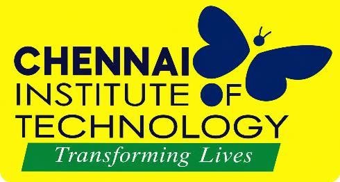
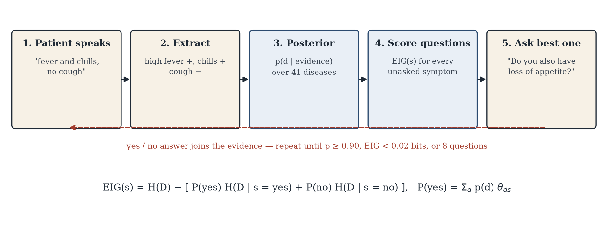
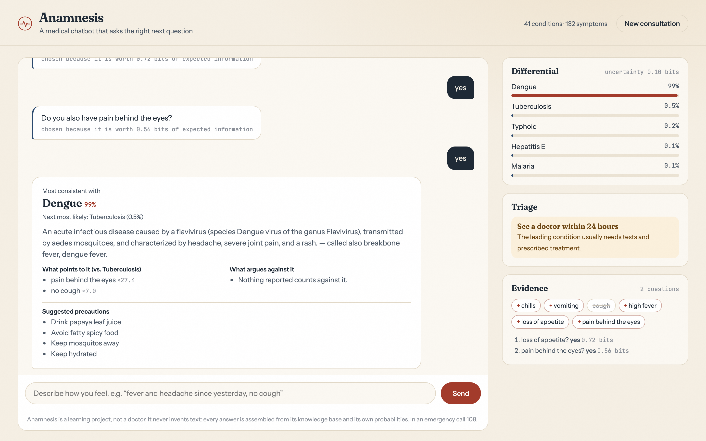
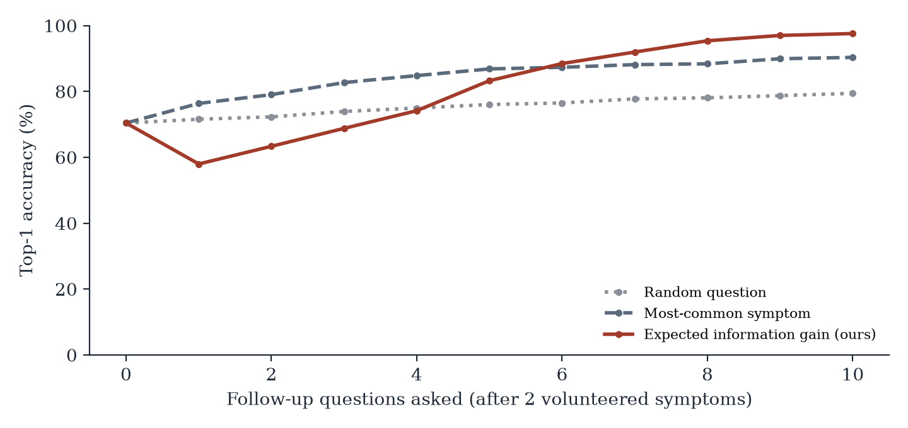

Information-gain driven symptom triage over 41 diseases and 132 symptoms
Symptom checkers name the right condition first only about a third of the time [Semigran 2015]. Student projects on the standard Kaggle dataset claim 100% — but patients start a conversation with two symptoms, not a 132-field form.
The famous 100% is memorisation. We split by unique profile, so no test patient has a copy in training.
| Version | From 2 symptoms | Top-1 |
|---|---|---|
| 1 · Logistic regression | one-shot | 61.8% |
| 2 · Masked-augmented LR | one-shot | 79.7% |
| Final · Evidence model + EIG | + 4.0 questions | 96.3% |

Each turn scores all 132 unasked symptoms by expected entropy reduction (0.18 ms) and asks the best one; stops at 90% confidence, abstains below 50%.

3% noisy answers · ECE 0.035 · NLU F1 0.927 on 50 lay-language utterances

| Policy | Top-1 | Questions |
|---|---|---|
| Random question | 79.4% | 7.9 |
| Most-common symptom | 90.4% | 5.2 |
| Expected information gain | 96.3% | 4.0 |
Well-chosen questions recover the accuracy that partial information takes away. Next: clinician review, seasonal prevalence priors (dengue in monsoon), Tamil input, real-user pilot.